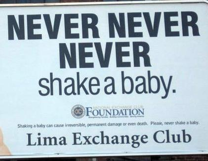

I am not going to have kids.

And never never never smack a teenager, although both will drive you insane.
A friend and I were talking today about my decision not to have kids. I told him that I had a vasectomy and that, before committing, I needed to slay many demons. By demons, I meant discouraging and unrealistic thoughts about what being childless would mean about me.
My life is going to be meaningless without children. Lets look at an example. Is the Dalai Lama's life meaningless? I feel very engaged with life, and engagement with life is largely what creates a sense of meaning. I volunteer in my community, I live a voluntarily simple life, I work toward environmental sustainability. My life's purpose is to engender a lush and peaceful universe. I am engaged in a goal that cannot be achieved in my lifetime, and that feels very meaningful.
Without children, I have lost at evolution. I am a failure as a human. This was a hard one for me. I am a competitive guy by nature, and by not having children, I lose in the game of evolution. My genes will not persist, because they were not strong enough. At least that is the story my mind and part of society tells me. That said, my genes are 99.9% the same as your genes are. So, I am not concerned about withdrawing my 0.1% genetic variation from the gene pool. Also, competition is a human construct that doesn't actually exist. Even if I do lose the game of evolution, I can be content to lose it. It's an illusion. There are many other competitions that I have also lost, many of which matter more.
This is the end of the [insert last name here] family. This was a hard one for me too. I love my family and I am proud of its name. It's sad that mine may be its last generation. Our family name has persisted for centuries. It might end with me. That's striking! It is sad. It is a letting go. What is in a name, though? If we look in a Canadian phone book, we will likely find hundreds of Smith last names. In a Finish phone book we will find the same for Salo. In Switzerland, there are several Luttin last names. What about Mitchell? A rose by any other name is still a rose, and all humans are 99.9% the same genetically. A last name is an odd construct designed to differentiate us. It's clear to me that coming from the same family or having the same last name doesn't mean people are more similar. I am strikingly different from my Mom, Dad, and Sister. I have friends from other families that are more similar to me than any of my blood relatives even though we don't share a last name.
I will never get to see the awesomeness that my wife and I would produce. Imagine how wonderful that small life form will be that is the commingling of my genes with those of my wife’s. Looking at that creation of ours will bring such joy and wonder to my life. Wow. Nope. Sucks to be me. I will never have that experience. Bummer. I image that rush, though, wears off after having changed the first diaper or having stayed up 36 hours to hear screaming. "Yup, this is what we produced, it's beautiful and now it's pooping all over the sofa. Honey, where do we keep the disinfectant?" I am thinking to myself, "Do we have to do this for another 19 to 30 years?" There is a reason why we have signs stating, "Never shake your child." It's because children drive us insane. If you really want that rush of seeing the incarnation of your genes, consider talking to a psychologist to overcome narcissistic tendencies. Your children will thank you. The alternative is to raise a child with the baggage of being a showcase for your genes. This burden probably won't lead to a well-adjusted person.
I am going to let my parents down. Perhaps. I've let my parents down thousands of times, and this won't be the last one. If needs be, I can see a psychologist about the guilt I feel for having let down my parents. In fact, I've done that a few times in my life. Seeing a good psychologist costs far less than does having a child, and we can then make the decision about whether to procreate or not, after having processed parental pressure. If, after having slayed the demon of parental pressure, we choose to have kids, then we're going it for a proper reason instead. Having a child is an embarking on the most difficult and longest marathon we will ever run. We had better bolster ourselves with real motivation.
I am going to drift from my friends that have kids. All my friends are having kids. There will be children's parties. There will be elementary, middle, and high school events. There will be baby walking-groups. Without having a child, we will likely go without a host of social events that will be really fun! Having a child, though, is a commitment to raising a life not a strategy for building social connections. Instead of having a child, we can join a walking group, volunteer at the library, tell our friends (those with children) that we are happy to baby sit or that we would like to be a god parent. Our friends will likely be grateful to have a well-deserved sanity (or romance) break from their tiny, teenage or at-home-adult angels.
People will see me as weird and problematize my choice not to have kids. Choosing not to have kids (or "worse" yet choosing to be single without kids) is the new gay. "Oh, you decided not to have kids. Did you have a difficult childhood?" That's a common question for me. "Oh, you are single. Do you want me to set you up with someone?" is a question that happy single people face. I am not single but if I were, I would have to contend with countless people trying to fix what they consider to be a problem. The marriage- and kid-focused culture will see me as weird. Maybe it is a problem that I am childless. What's wrong with me? It does suck to explain to people that we have decided not to have children because we could not find a good reason to reproduce. This is often an uncomfortable moment. Parents will evangelize child-rearing. "Oh. It is the most amazing experience of our lives." I have a friend who became a doctor. It is the most amazing experience of his life too, but it wasn't for me.
Why do we have kids? From the beginning of time humans have been having children for all sorts of reasons. For instance, nature made sex enjoyable and in some sense, the orgasm is a way to trick unwitting humans into having kids. Once culture arrived, some religions made sex sinful, and within the constraints of a god-approved marriage, it was religious duty to populate the earth with people of a target religion. If you happened to have fun while doing it, that might be a sin. This may be why some religions tend to have families of nine. Sure, having children may be a lot of work, and you may want to shake your child to death, but it's your duty to god to procreate, so say goodbye to your freedom
Why should we have kids? Modern people, though, must have rational reasons. It cannot be just orgasms and religious duty that motivate people to have kids. To me the only rational motivation for procreating is a lack of humans on earth combined with an abiding interest in nurturing and protecting children. Don't get me wrong. I do lots and lots of irrational things. Having a child is a complex and personal, albeit often misguided decision. When I ask people why they had or are going to have kids, the common responses are not what I consider "good" reasons to bring a new life into the world.
Do you long to take care of life forms? Or is there another reason for having kids?
I am having kids because I want to have someone to take care of me when I am older. When I am 90 years old, my child will be grown up and come to the hospital to nuture me. He will feed me and love me and provide for my care. She will sooth my misery and do so out of love. I think that is a gamble – your child might be a traveling salesperson who never visits. Further, raising a child with the expectation that she will take care of us in old age may make it less likely that she will fulfill that duty. "Yeah, my dad feels entitled to my care. I phone him once a month, and it's never enough." Further, even if our child does have the motivation to take care of us, she might not have the ability to do so. Our child might have a serious cognitive disability like Autism. That would be more of a financial/emotional liability than asset. Worse, our child could have an anti-social personality and undermine both our health and wealth. It's certainly possible that we will give birth to a human committed to our care as we age. Our child, though, might resent being conceived as a self-serving investment rather than as a human being with intrinsic worth.
It's important for smart people to procreate because we need more smart people. I am not sure where to start on this one other than noting that some of the most intelligent people in the world come from parents of average intelligence. Humans are 99.9% the same! It's probably more important for smart people to start practicing personal ethics than it is for smart people to reproduce themselves.
It's fun to have kids. Kids are a joy! Um. Have we looked at most people who have kids? Happy parents seem to be the exception - it's extremely hard work and much like poker, there's both skill and luck involved. Parents fight the good fight but often look like they are living lives of quiet desperation. In his book Stumbling on Happiness, Daniel Gilbert cites research that marital satisfaction declines after the birth of the first child and only rises again after the last child leaves the house. Further, in her book The Happiness Project, Gretchen Ruben thinks about this statistic in light of her own experience having children. The best that she can muster in response is that, for her, having children creates a sort of "fog happiness." In other words, having children makes life and marriage less satisfying, but there is a certain sense of being happy behind that all. I can see this. I don't drive a car (circa 2014) and that often sucks, but there is a certain fog happiness in knowing that I am doing the right thing. It's the satisfaction of martyrdom and self-righteousness. Nurturing our own children is doing the right thing too. Having children probably does comes with the thought, "I have children, and that is right and good."
My biological clock is ticking; it's natural to have kids. All the animals in the kingdom have kids, my body tells me that I should have kids, humans have been having kids for millennia. It is therefore right and good. And I tell you honey, I am ovulating like I have never ovulated before and the restlessness around not having kids is starting to make me wild! Resist. This is the naturalistic fallacy at work: if it's natural, then it must be good. If things were good by virtue of being natural, then I should go out and eat some mushrooms from the forest. Mushrooms are natural. So are some heinous crimes. Yes, our body is screaming to have children. Go to the gym but just don't have children until you have thought it through. Do we really want to spend the next 19 to 30 years doing the hardest, riskiest, and most thankless work of our life, all just to relieve something that 30 minutes in the gym can handle? If so, go for it, grasshopper.
Everyone is having kids so it can't be wrong. To have kids because everyone else is having kids is the same as admitting that you are really uncertain about whether to have kids or not. If we cannot find our own reasons for "having kids," then we are not going to find the motivation to sustain the process.
I want to see what my kids would look like. Yikes. That's going to wear off pretty quickly even if they are georgeous. And, what if you consider them ugly?
I want my own. Fair enough. There is nothing wrong with that. Selfishness is part of being a healthy human. I am not having kids for a selfish reason: I love my autonomy and I hate taking care of living things - it's a pain. The irony here is that doing a good job raising kids is a fundamentally selfless act while having your own kids is a fundamentally selfish act. Make sure you know that what is motivating you to start is the opposite of what it will take to succeed in the long-run.
What else am I going to do? If we're bored right now then we probably aren't resourceful enough to be able to raise well adjusted kids. See a psychologist! It will be less expensive and more satisfying. Then we can have kids once we are properly engaged with life.
We need more [insert race/ethnicity here] people. There is an un-named dictator from Europe that comes to mind.
It's a good retirement plan. It might not be the best research source, but Canadian Living estimates that it cost about $250,000 to raise a child in Canada. An adult child might earn far more than that and be able to support you in our old age. This is a wildly risky investment. We talked to our financial advisor.
I have always wanted to have kids. Okay... well, are we sure? What does our fantasy of having kids look like? Keep in mind that for most things in life, our expectations are radically different than the actual experience will be. I remember always wanting to go scuba diving. When I finally did, it was like, "that's it?!" So, I never again went scuba diving. Imaging my shock if the instructor said, "Now you must scuba dive every day for the next 19 to 30 years." I would have shook him! We must be sure to have an abiding interest in taking care of a growing human before we decide to produce one. Go baby sit. Go volunteer at a youth center. Change our friends' babys' diapers. It isn't easier when the kid is our own; actually, it's harder because we're stuck with the crying pooping child all night. Then he/she becomes a nasty teenager (teen, by the way, means "suffering").
People say I would make a good parent. We need good parents and I would be a good one. Indeed, I am very good with infants, children, and teens. Some people say I am a kid magnet. I have worked as a kids' camp leader and a youth center supervisor. These days I run a conjuring club; the age group is eight to sixteen or so. I have also tutored home school for teenagers. It's satisfying but exhausting work, and I am exquisitely relieved to come home to the respite of just my wife.
In any case, no one has kids. Kids do not belong to us. We never have them. Rather, we are going to be taking care of kids... for a long time. We hear people say, "Cynthia is going to have a child." That's just part of the story. What we ought to say is, "Wow. Cynthia has committed to take care of a human being for years." Those who make that decision have my deepest, sincerest respect.
Here are Garfunkle and Oats on the topic: